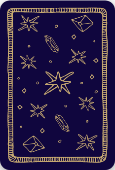
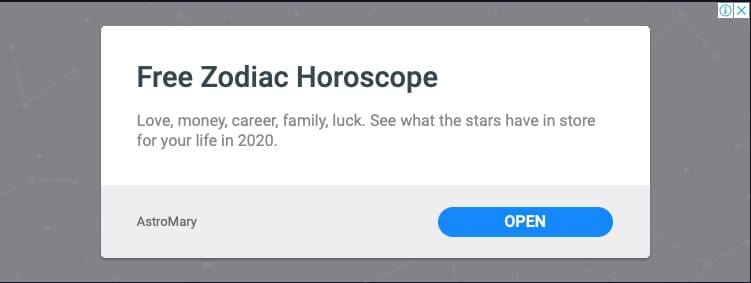

Таро Три карты
So simple – just pick 3 cards in 3 steps!
Pick Card 0


Your 2020 Tarot Reading
2020 is going to become a year of great potential for some zodiac signs. However, other zodiac representatives may face significant troubles in their attempts to move forward. What awaits your sign this year? Check your 2020 Tarot prediction and see the Tarot card of your sign that will guide you throughout the whole year!
[
{
"id": 0,
"image": "00-Shut.jpg",
"imageAlt": "ШУТ",
"title": "ШУТ",
"subtitle": "Начало путешествия. Прыжок в неизвестность.",
"prediction": "Шут появляется в раскладе в тот момент, когда для вас начинается новый этап в жизни. Могут появиться перспективные возможности, прийдя на смену тем, которые приносили вам только огорчения. Возможно, судьба потребует от вас принятия важного решения, которое откроет перед вами неизведанные пути. Новое начинание может привести куда угодно: возможно, вам придется плыть по течению, возможно, вот-вот начнутся новые отношения или в вашей жизни появится незнакомый человек; возможно, те люди, которые вас сейчас окружают, будут принимать участие в вашем личностном или профессиональном росте. Шут может также обозначать человека бисексуальной или гомосексуальной ориентации, который будет оказывать свое влияние на ситуацию.",
"prop1":"null",
"prop2":"null"
},
{
"id": 1,
"image": "01-Mag.jpg",
"imageAlt": "МАГ",
"title": "МАГ",
"subtitle": "Владение особыми знаниями. Сфокусированная энергия. Составление планов и формирование далеко идущих замыслов и действий.",
"prediction": "Скоро вы сможете воспользоваться преимуществами, полученными в результате длительного и дисциплинированного обучения. Для достижения своих целей вы или человек, которому вы доверяете, сумеет воспользоваться своими талантами и достоинствами. Подходящее время для начала новых проектов, так как именно сейчас вы являетесь хозяином своей судьбы. Все необходимое будет у вас под рукой. Технически совершенное современное оборудование станет хорошим подспорьем. Вы сумеете справиться с новой ситуацией, предпринять необходимые действия и сосредоточить свое внимание на реализации потенциальных возможностей. Вы сможете представить себя в самом выгодном свете тем, кто заинтересован в ваших знаниях и опыте. Именно сейчас вам поможет творческое мышление; может быть, имеет смысл продолжить обучение. Вы сможете в полной мере воспользоваться своими организационными способностями. Возможно, вас ждет успех в финансовых делах. Маг говорит о том, что силы природы помогут вам достичь своих целей. Для успеха вам могут понадобиться специальные навыки и умение работать с техникой. Маг указывает на то, что вы должны наблюдать, экспериментировать, оставаться восприимчивым, совершенствовать свои навыки и учиться управлять миром. Если вы задавали вопрос о здоровье, то Маг может символизировать опытного терапевта или хирурга.",
"prop1":"null",
"prop2":"null"
},
{
"id": 4,
"image": "04-Imperator.jpg",
"imageAlt": "ИМПЕРАТОР",
"title": "ИМПЕРАТОР",
"subtitle": "Отец. Порядок. Контроль. Сила. Осуществление планов. Результат. Покровительство.",
"prediction": "Император говорит о том, что, используя умение рационально мыслить и переходя от мысли к действию, вы сможете достичь успеха. Вы способны продвинуться по службе, ваши отличные организационные навыки оценят по достоинству. Возможно, вы будете иметь дело с важным соперником или человеком, занимающим руководящую позицию. Это карта уважения, стабильности, прочности, руководства и рациональности. Она информирует о том, что вы становитесь независимым человеком по мере утверждения себя в этом мире. Сейчас самое время предпринимать действия, возможно, необходимо организовать какую-то структуру, создать стабильное окружение. Вам может помочь наставник или партнер. Возможно, скоро вы добьетесь высокого положения в обществе. Император указывает на то, что вы придаете слишком большое значение доминированию в любовных отношениях, а это может привести к тому, что они утратят чувственность и привязанность со стороны партнера. В раскладах на ситуацию эта карта предостерегает от крайностей и предлагает рассмотреть возможность компромисса с общественным мнением.",
"prop1":"null",
"prop2":"null"
},
{
"id": 7,
"image": "07-Kolesnica.jpg",
"imageAlt": "КОЛЕСНИЦА",
"title": "КОЛЕСНИЦА",
"subtitle": "Прогресс, возможный благодаря приведению противоположных сил в равновесие. Умение контролировать свои эмоции и желания.",
"prediction": "Колесница указывает на потребность в любой ситуации оставаться сосредоточенным и контролировать противоборствующие силы, чтобы продолжать движение вперед. Вы способны спокойно относиться к приказам, это помогает вам придерживаться «золотой середины» между несовместимыми мыслями, чувствами и желаниями. В то же время вы чувствуете, что не способны ускорить получение результата, поэтому сейчас самый лучший способ действия – плыть по течению. Возможно, в настоящее время вы боретесь за самоутверждение и вам нужно разобраться, почему ваши мысли, эмоции и желания находятся в конфликте между собой. Вы сумеете не свернуть с выбранного пути» если ваше решение будет твердым. Вашей стратегией должны стать решительное продвижение вперед и четко определенная цель. Вы преодолеете все трудности и выйдете из сложившейся ситуации победителем. В общем, независимо от того, о какой ситуации вы спрашивали, она разрешится в вашу пользу. Ваша сила воли и четко определенная цель помогут вам оказаться на высоте. Колесница может обозначать путешествие, покупку машины или использование нового для вас вида транспорта.",
"prop1":"null",
"prop2":"null"
},
{
"id": 8,
"image": "08-Sila.jpg",
"imageAlt": "СИЛА",
"title": "СИЛА",
"subtitle": "Моральная сила. Самопознание, терпение, самосовершенствование. Духовная (иногда платоническая) любовь.",
"prediction": "Вам необходимо доверять своей внутренней силе, терпению и мягкости, это поможет успешно решить все проблемы. Сейчас самое время для того, чтобы обрести веру в себя. В данный момент вы занимаете прочное положение и способны противостоять тому, кто оказывает на вас давление. Вы можете направить свои низменные страсти в правильное русло, это поможет вам стать здоровым и добиться успеха. Если ваш вопрос касался здоровья, то ожидайте исцеления и восстановления жизненных сил.",
"prop1":"null",
"prop2":"null"
},
{
"id": 36,
"image": "36-mechei01.jpg",
"imageAlt": "ТУЗ МЕЧЕЙ",
"title": "ТУЗ МЕЧЕЙ",
"subtitle": "Чувство силы. Не было бы счастья, да несчастье помогло. Это карта огромной мощи – как в любви, так и в ненависти. Корона, изображенная на ней, может таить в себе куда более высокое значение, чем обычное карточное предсказание.",
"prediction": "Туз Мечей может указывать на начало нового интеллектуального проекта. Так как Мечи связаны с борьбой, конфликтами и трудностями, эта карта указывает на вероятность многообещающего проекта, который может возникнуть из неблагоприятной ситуации. Традиционное значение этой карты – «сила в несчастье»: не было бы счастья, да несчастье помогло. Чтобы преодолеть все препятствия и трудности, вам нужны дисциплина и решительность. Неизбежные и болезненные перемены в жизни могут ' положить начало чему-то позитивному. В вашем распоряжении большая сила. Вы можете сконцентрировать свой разум и усилия на достижении цели. Вам требуются логика, уравновешенность и порядок. Иногда эта карта указывает на то, что для разрешения конфликта необходимо вмешательство закона. Если вы спрашивали о своем здоровье, то Туз Мечей указывает на необходимость назначения инъекций или хирургического вмешательства.",
"prop1":"null",
"prop2":"null"
},
{
"id": 69,
"image": "69-zhezlov06.jpg",
"imageAlt": "ШЕСТЕРКА ЖЕЗЛОВ",
"title": "ШЕСТЕРКА ЖЕЗЛОВ",
"subtitle": "Большая вероятность успеха.",
"prediction": "Шестерка Жезлов – карта триумфа и победы. Вы получите вознаграждение за проделанную работу, или же вас ожидает повышение по службе. Если вы студент, то защита диплома пройдет успешно, вы получите академическое признание за свои работы. Вы достигнете желаемой цели, ваши усилия будут вознаграждены. Битва выиграна, и ваша победа вполне заслуженная. Возможно, в скором времени вас ожидает путешествие. Все проблемы будут решены. Соглашение будет достигнуто. Возможны известия особой важности, какие мог бы доставить, к примеру, королевский гонец.",
"prop1":"null",
"prop2":"null"
}
]